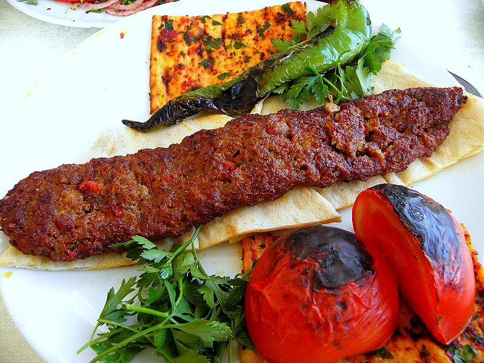

Adana kebab is another Turkish food that loved by both local and foreign people across the world
It is originated from the Turkish city named Adana but can be found in the entire country
Adana kebab can best cooked on a barbecue and Turkish style ovens also can be used